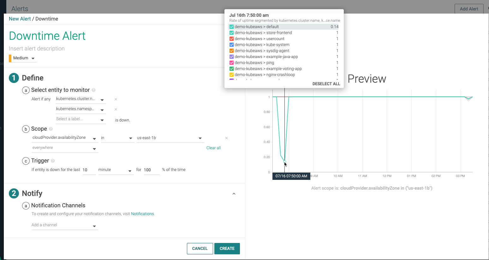
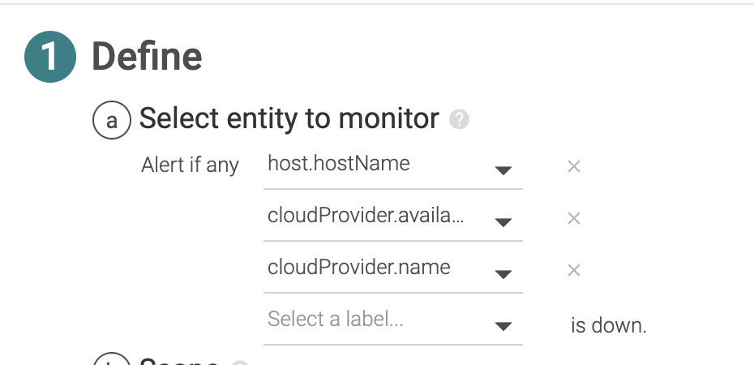
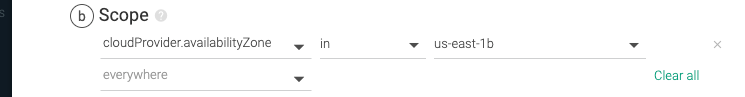
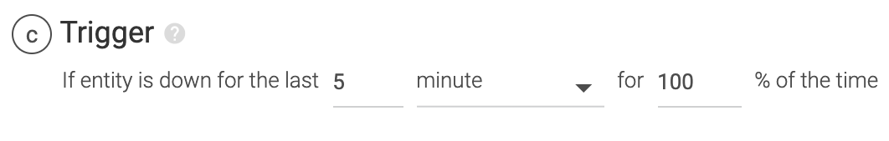

Downtime Alert
Sysdig Monitor continuously surveils any type of entity in your infrastructure, such as a host, a container, a process, or a service, and notify when the monitored entity is not available or responding. Downtime alert focuses mainly on unscheduled downtime of your infrastructure.
|  |
In this example, a Kubernetes cluster is monitored and the alert is segmented on both cluster and namespace. When a Kubernetes cluster in the selected availability zone goes down, notifications will be sent with necessary information on both cluster and affected namespace.
The lines shown in the preview chart represent the values for the segments selected to monitor. The popup is a color-coded legend to show which segment (or combination of segments if there is more than one) the lines represent. You can also deselect some segment lines to prevent them from showing in the chart. Note that there is a limit of 10 lines that Sysdig Monitor ever shows in the preview chart. For downtime alerts, segments are actually what you select for the "Select entity to monitor" option.
Define a Downtime Alert
Guidelines
Set a unique name and description: Set a meaningful name and description that help recipients easily identify the alert.
Severity: Set a severity level for your alert. You can also view and sort events in the dashboard and explore UI as well. The Priority:
High,Medium,Low,andInfoare reflected in theEventslist, where you can sort by the severity of the Event/Alert. You can use severity as a criterion when creating event and alerts, for example: if there are more than 10 high severity events, notify.Specify multiple segments: Selecting a single segment might not always supply enough information to troubleshoot. Enrich the selected entity with related information by adding additional related segments. Enter hierarchical entities so you have the bottom-down picture of what went wrong and where. For example, specifying a Kubernetes Cluster alone does not provide the context necessary to troubleshoot. In order to narrow down the issue, add further contextual information, such as Kubernetes Namespace, Kubernetes Deployment, and so on.
Specify Entity
Select an entity whose downtime you want to monitor for.
In this example, you are monitoring unscheduled downtime of a host.
Specify additional segments:
|  |
The specified entities are segmented on and notified with the default notification template as well as on the Preview. In this example, data is segmented on hostname, the cloud provider's availability zone, and cloud provider name. When a host goes down, the notification will not only include the affected hostname but also the associated cloud provider and the availability zone that it's a part of.
Configure Scope
Filter the environment on which this alert will apply. An alert will fire when a host goes down in the availability zone, us-east-1b.
|  |
Use advanced operators to include, exclude, or pattern-match groups, tags, and entities. See Multi-Condition Alerts.
You can also create alerts directly from Explore and Dashboards for automatically populating this scope.
Configure Trigger
Define the threshold and time window for assessing the alert condition. Supported time scales are minute, hour, or day.
|  |
If the monitored host or Kubernetes cluster is not available or not responding for the last 5 minute, recipients will be notified.
You can set any value for % and a value greater than 1 for the time window. For example, If you choose 50% instead of 100%, a notification will be triggered when the entity is down for 2.5 minutes in the selected time window of 5 minutes.
Usecases
Your e-commerce website is down during the peak hours of Black Friday, Christmas, or New Year season.
Production servers of your data center experience a critical outage
MySQL database is unreachable
File upload does not work on your marketing website.